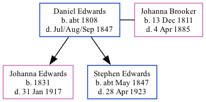

Daniel Edwards c1808 - 1847
[ Home ] | [ Calendar ] | [ Surnames Index ] | [ Family History ], Daniel Edwards, the 3 times great-grandfather of <a href="I1.html">Nigel Horne</a>, was born in Kent, England <i>c.</i> 1808<span class="citation">1</span> and married Johanna Brooker (a pauper char woman with whom he had 2 children: <a href="I103.html">Johanna Brooker</a> and <a href="I182.html">Stephen</a>) at St Mary the Virgin Church, Minster, Thanet, Kent on Sep 18, 1829<span class="citation">3</span> (St. MarysKFHS CD34). In 1841, he lived in St Lawrence, Thanet, Kent<span class="citation">1</span>. <p>He died in Jul/aug/sep 1847 in Thanet, Kent<span class="citation">2</span> and was buried in St Lawrence, Thanet, Kent on Aug 18, 1847<span class="citation">4</span>.
Children
- Johanna Brooker was born in 1831
- Stephen was born c. May 1847
Citations
- 1841 England Census Online publication - Provo, UT, USA: The Generations Network, Inc., 2006.Original data - Census Returns of England and Wales, 1841. Kew, Surrey, England: The National Archives of the UK (TNA): Public Record Office (PRO), 1841. Data imaged from the National
- England & Wales, FreeBMD Death Index: 1837-1915 Online publication - Provo, UT, USA: The Generations Network, Inc., 2006.Original data - General Register Office. England and Wales Civil Registration Indexes. London, England: General Register Office. © Crown copyright. Published by permission of the Cont
- Kent Marriages And Banns - Findmypast
- Familysearch.org (<a href="http://www.familysearch.org/Eng/search/IGI/individual_record.asp?recid=100010036903&lds=1®ion=2&frompage=99">www.familysearch.org</a>)
Family Tree
Generated by Ged2Site. Last updated on Jul 20, 2025